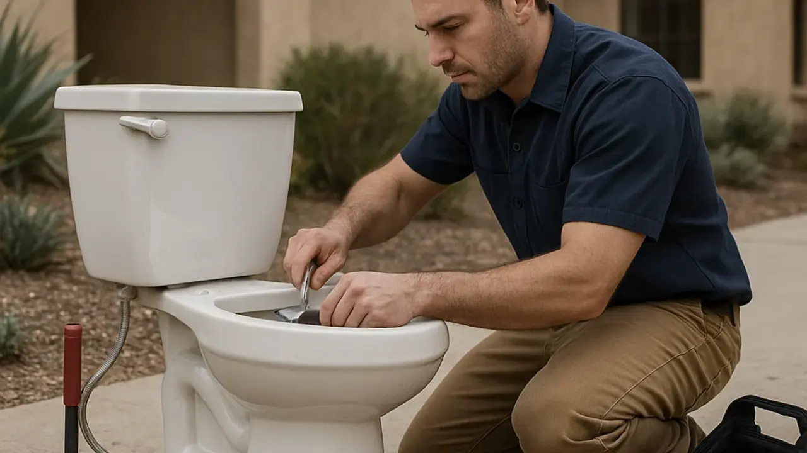

Clogged toilets causing overflow
A toilet that clogs and overflows is a problem that cannot wait. Our team uses specialized tools to clear clogs and restore proper function quickly.
A toilet that runs all night, clogs every week, or leaks at the base is not a small annoyance: it wastes water every day, it can damage the floor, and it makes the bathroom hard to use. Our toilet repair and installation services in California fix the fault properly, replacing worn parts such as flappers, valves and seals, or installing a new toilet when that is the better option.
What this service is: Toilet repair and installation covers fixing leaks, clogs, and faulty parts in a toilet, and installing a new toilet when one is needed. It includes diagnosing the issue, fixing leaks, unclogging toilets, and replacing worn parts, and every job ends with a final inspection and a cleanup, so the bathroom is left in pristine condition.

Toilet repair and installation in California is a specialised service that addresses various issues with toilets, including leaks, clogs, and installation of new units. This service is vital for maintaining hygiene and preventing water waste, because a toilet that runs or leaks wastes water around the clock, not just when it is used.
Local customers often require toilet services due to common problems like running toilets and clogged drains. A running toilet is usually a worn valve or flapper; a leaking base is usually a failed wax seal; a toilet that clogs often usually has a partial blockage or a worn part. California toilet repairs help restore functionality and prevent further damage, ensuring peace of mind for homeowners.
A toilet is the fixture that wastes the most water when it goes wrong, and it usually goes wrong in a way that is easy to miss. A flapper that no longer seals lets water run silently from the tank into the bowl all day and all night, and the only sign is a water bill that creeps up. A wax seal that has failed lets water seep into the floor a little at a time, and the only sign is a damp patch or a floor that feels soft. That is why a toilet visit checks the tank, the base and the floor, not just the flush, and why the final test is done with several flushes and a check for leaks at every connection.
A toilet job is a small job that deserves a complete one: inspection, the right parts, a proper installation, and a cleanup that leaves the bathroom as it was found.
A thorough inspection to diagnose the problem and determine the best course of action, whether that is a repair, a part replacement, or a new installation.
Replacement of faulty components, such as flappers, valves, and seals, to restore function. Most running toilets and many leaks are fixed by replacing a single worn part, not by replacing the toilet.
Professional installation of new toilets, ensuring they meet all local plumbing codes, with the new unit sealed, tested and checked before we leave.
Clean-up after the service to leave your bathroom in pristine condition. A toilet job should not leave you with a bathroom to clean.
We replace the worn parts that cause most toilet problems: flappers that no longer seal, fill valves that never shut off, and wax seals that have failed. Most running toilets and many leaks are fixed by replacing a single worn part.
We flush the toilet several times, check that the bowl empties fully, and adjust the water level in the tank so the flush is strong and the fill valve shuts off properly. A toilet that is tested before we leave is a toilet that works.
We begin with a thorough consultation to assess your toilet issues. This typically takes about 30 minutes and helps us understand your specific needs, including whether the problem is a clog, a leak, or a toilet that keeps running.
Our licensed plumbers conduct a detailed inspection of your toilet system, identifying any leaks, clogs, or installation needs. This step usually takes around 60 minutes, because a proper diagnosis is what stops the problem coming back.
After diagnosing the issues, we provide a transparent estimate for the repair or installation. This ensures you know the costs upfront, including whether a new toilet or a part replacement is the better value.
Our team performs the necessary repairs or installations using high-quality materials and tools. This process can take between 1-3 hours based on the complexity, from replacing a valve to installing a new toilet.
We conduct a final inspection to ensure everything is functioning correctly. You will receive maintenance tips to keep your toilet in top condition, and the bathroom is cleaned up before we leave.
Here is what happens when our technician visits, in order:
A toilet is a simple machine with a few parts that wear out, and the problems it develops are usually the same few. If yours looks like one of these, the cause is usually the same.
A toilet that keeps running wastes water around the clock and pushes the water bill up. The cause is usually one worn part inside the tank: a flapper that no longer seals, or a fill valve that never shuts off properly. The inspection opens the tank and checks both, and the fix is usually replacing the worn part, not replacing the toilet. After the repair, the toilet is flushed several times and the fill level is checked, so the running stops for good instead of coming back in a month.
A toilet that clogs again and again is not always a toilet problem. It can be a partial blockage in the drain, a toilet that is not flushing with enough force, or a problem further down the line. The inspection checks the flush, the drain and the toilet itself, and the fix depends on what is found: a worn part, a cleared drain, or in some cases a new toilet that flushes properly. Clearing the same clog every week without finding the cause is not a fix.
Water pooling around the base of a toilet usually means the wax seal under it has failed, and it can damage the floor if it is left. The toilet may also rock or move, which makes the seal fail faster. The repair involves lifting the toilet, replacing the wax seal, checking the flange underneath, and reseating the toilet so it is solid and sealed. After the repair, the base is checked for leaks and for movement before the technician leaves.
Purpose-built equipment, used by trained technicians — so the job is done accurately the first time.
Used for tightening and loosening plumbing fittings during repairs and installations, so connections are secure and watertight.
Essential for clearing stubborn clogs in toilet drains, where a plunger cannot reach the blockage.
Helps in diagnosing water pressure issues that may affect toilet performance, such as a fill valve that never shuts off properly.
Used to seal threaded plumbing connections to prevent leaks, so a repaired joint stays dry.
A toilet auger designed to clear stubborn clogs in toilet drains, with a protective sleeve so it reaches the blockage without scratching the bowl.
The homeowner faced frequent clogs and overflow issues, leading to frustration and potential water damage.
After our service, the toilet operates flawlessly, with no clogs reported for six months.
The toilet was constantly running, wasting water and increasing the homeowner's bill.
We replaced the faulty valve, stopping the running and saving the homeowner approximately $50 monthly.
The homeowner noticed water pooling around the toilet base, causing damage to the floor.
After replacing the wax seal, the leak was resolved, and the flooring was restored.
Toilet problems are few, but each one wastes water or risks damage. These are the three we are called to fix most often.
Ask a pro →A toilet that clogs and overflows is a problem that cannot wait. Our team uses specialized tools to clear clogs and restore proper function quickly.
A toilet that keeps running wastes water all day and pushes the bill up. We diagnose the cause and replace faulty parts to stop the running and save water.
Water pooling around the base usually means a failed wax seal, and it can damage the floor underneath. Our plumbers replace seals and fittings to ensure a watertight installation.
A toilet that flushes weakly usually has a problem with the water level in the tank, a worn flapper, or a blockage in the rim jets or the drain. We check the tank, the flush mechanism and the drain, and fix the cause so the toilet flushes fully with one flush.
A toilet that rocks or moves is not seated properly, and the movement breaks the wax seal underneath, which leads to leaks and floor damage. We lift the toilet, check the flange, replace the seal, and reseat it so it is solid and level.
$200 - $600 depending on scope
Pricing for toilet repair and installation in California can vary based on several factors, including the complexity of the job and the type of toilet being installed. Typical costs range from $200 to $600. A repair, such as replacing a flapper or a valve, sits at the lower end; a new toilet installation, especially a high-efficiency model, sits at the higher end. Factors such as the need for additional plumbing work or specialized fixtures can affect the final price.
Our pricing reflects the quality of materials and expertise we bring to every job, ensuring long-lasting results. A toilet repaired with the right part, or installed properly the first time, is a toilet you do not have to think about again.
Toilet repair and installation in California typically costs between $200 and $600. A repair, such as replacing a flapper or a valve, sits at the lower end; a new toilet installation, especially a high-efficiency model, sits at the higher end. The estimate says whether the job is a repair or a new installation, which parts are included, and what the total cost is before work starts. Factors such as the need for additional plumbing work, a damaged floor or flange, or specialised fixtures can affect the final price, and the estimate will set those out.
High-efficiency models may have higher installation costs due to specific requirements. A standard toilet is a simpler installation than a model with specific fitting or water-saving requirements.
Older plumbing may require upgrades before installation, increasing costs. If the supply line or the flange is in poor condition, it should be fixed as part of the job rather than left to fail later.
Difficult-to-reach locations can add labour time and costs. A toilet in a tight bathroom, or one that needs the floor worked on, takes longer than a straightforward swap.
A damaged floor or flange underneath the toilet adds work to the job. The inspection checks both before the estimate is written, so any extra work is included in the price you approve.
Typical costs range from $200 - $600, depending on scope. The table below shows the factors that move the price up or down.
| Cost factor | How it affects the price |
|---|---|
| Type of Toilet | High-efficiency models may have higher installation costs due to specific requirements. A standard toilet is a simpler installation than a model with specific fitting or water-saving requirements. |
| Existing Plumbing Condition | Older plumbing may require upgrades before installation, increasing costs. If the supply line or the flange is in poor condition, it should be fixed as part of the job rather than left to fail later. |
| Accessibility | Difficult-to-reach locations can add labour time and costs. A toilet in a tight bathroom, or one that needs the floor worked on, takes longer than a straightforward swap. |
| Repair or new installation | A repair, such as replacing a flapper or a valve, sits at the lower end of the range. A new toilet installation, especially a high-efficiency model, sits at the higher end. The estimate says which one your job is before any work starts. |
| Type of toilet | High-efficiency models may have higher installation costs due to specific requirements, and the price depends on the model chosen. The estimate lists the parts included, so you can see what the total cost covers. |
| Condition of the floor and flange | Older plumbing may require upgrades before installation, and a damaged floor or flange underneath the toilet adds work to the job. The inspection checks the floor and the flange before the estimate is written, so it is included in the price you approve. |
“I had a leaking toilet that was driving me crazy. The team was prompt and fixed it quickly. I highly recommend their toilet repair services!”
John D.Homeowner, Bakersfield
✓ Verified“Their toilet installation service was seamless. They helped choose the right model and installed it efficiently. Great experience!”
Sarah L.Property Manager, Oxnard
✓ Verified“I had a clogged toilet, and their team arrived within an hour. They were professional and solved the issue quickly. Very satisfied!”
Mike R.Homeowner, Sunnyvale
✓ VerifiedBefore you book toilet repair or installation in California, compare plumbers on the things that decide whether a toilet job goes well. Here is what to check:
To fix a toilet in California, start by identifying the issue, such as a clog or leak. Simple fixes can often be done with a plunger or by tightening fittings. But a toilet that keeps running, leaks at the base, or clogs again and again usually has a worn part, such as a flapper, a valve or a seal, and that is a job for a licensed plumber with the right parts.
Common toilet problems in California include clogged toilets, running toilets, and leaks. Regular maintenance can help prevent these issues. A running toilet is usually a worn valve or flapper; a leak at the base is usually a failed wax seal; frequent clogs usually mean a partial blockage that a plunger cannot clear.
Toilet installation in California typically costs between $200 and $600, depending on the type of toilet and any necessary plumbing adjustments. A standard toilet is at the lower end; a high-efficiency model, or a job where older plumbing needs upgrading first, is at the higher end.
California toilet repairs usually include diagnosing the issue, fixing leaks, unclogging toilets, and replacing worn parts. Each service is tailored to your specific needs. A typical visit covers an initial inspection, replacement of faulty components such as flappers, valves and seals, and a final inspection with cleanup.
The initial consultation typically takes about 30 minutes and the assessment and diagnosis usually takes around 60 minutes. The repair or installation itself can take between 1-3 hours, depending on complexity. Replacing a valve is a shorter job than installing a new toilet.
We start with a consultation, then a licensed plumber inspects your toilet system to identify leaks, clogs, or installation needs. You get a transparent estimate with the costs upfront, we do the work, and we finish with a final inspection and maintenance tips, plus a cleanup that leaves your bathroom in pristine condition.
Yes. Post-service cleanup is included, and we finish with a final inspection to ensure everything is functioning correctly. A toilet job should not leave you with a bathroom to clean.
A toilet that keeps running is usually a worn flapper or a faulty fill valve. The flapper is the rubber seal at the bottom of the tank: when it wears out, it no longer seals, and water runs silently from the tank into the bowl all day and all night. The fill valve is what refills the tank and shuts off when the water reaches the right level: when it fails, it never shuts off properly. Both are common, both are fixed by replacing the worn part, and neither needs a new toilet. The inspection opens the tank and checks both, so the fix matches the actual fault, and the toilet is flushed several times afterwards to confirm the running has stopped.
A repair is the right answer when the fault is one worn part, such as a flapper, a fill valve or a wax seal, and the toilet itself is in good condition. A replacement is the better option when the toilet is cracked, when it clogs constantly despite a clear drain, when it uses far more water than a modern high-efficiency model, or when it has already been repaired more than once and keeps failing. The estimate will say which one your job is, and whether the price includes the new toilet itself or only the labour to fit it, so you can compare the repair and the replacement honestly.
A repair is usually a short job. The initial consultation typically takes about 30 minutes and the assessment and diagnosis usually takes around an hour, and replacing a flapper, a fill valve or a wax seal is done within the same visit. A new toilet installation takes longer, because the old toilet is removed, the flange and the floor are checked, the new unit is installed and sealed, and the toilet is flushed several times and checked for leaks before the technician leaves. Either way, the estimate sets out the time involved before the work starts, and the bathroom is left clean and tidy afterwards.
Our toilet repair and installation services extend across California, so homeowners in the cities below can get a toilet that works properly again without a long wait.
 Emergency Plumbing ServicesOur emergency plumbing services ensure that urgent toilet issues are addressed promptly, preventing further damage.Explore →
Emergency Plumbing ServicesOur emergency plumbing services ensure that urgent toilet issues are addressed promptly, preventing further damage.Explore → Residential PlumbingWe offer comprehensive residential plumbing services, including toilet repair and installation, to keep your home running smoothly.Explore →
Residential PlumbingWe offer comprehensive residential plumbing services, including toilet repair and installation, to keep your home running smoothly.Explore → Commercial PlumbingOur commercial plumbing services are designed to meet the needs of businesses, including efficient toilet installation and maintenance.Explore →
Commercial PlumbingOur commercial plumbing services are designed to meet the needs of businesses, including efficient toilet installation and maintenance.Explore → Drain CleaningDrain cleaning services help prevent toilet clogs and ensure your plumbing system operates efficiently.Explore →
Drain CleaningDrain cleaning services help prevent toilet clogs and ensure your plumbing system operates efficiently.Explore → Sewer Line RepairWe provide sewer line repair services that can prevent backflow issues affecting your toilets.Explore →
Sewer Line RepairWe provide sewer line repair services that can prevent backflow issues affecting your toilets.Explore → Water Heater Repair & InstallationOur water heater services complement toilet installations, ensuring your plumbing system is fully functional.Explore →
Water Heater Repair & InstallationOur water heater services complement toilet installations, ensuring your plumbing system is fully functional.Explore → Leak Detection & RepairLeak detection services help identify hidden leaks that can lead to toilet issues and water waste.Explore →
Leak Detection & RepairLeak detection services help identify hidden leaks that can lead to toilet issues and water waste.Explore → Sump Pump & Pipe Leak RepairWe offer sump pump and pipe leak repair services to maintain the integrity of your plumbing system.Explore →
Sump Pump & Pipe Leak RepairWe offer sump pump and pipe leak repair services to maintain the integrity of your plumbing system.Explore →Contact us today for reliable toilet repair and installation in California. Our skilled team is ready to assist you with any plumbing needs. Get a free estimate first: a local dispatcher will confirm your visit shortly, and you get an estimate before work begins.
Get a free estimate +1 (619) 612-9370 →Reach out to us for all your plumbing needs in California. Our team is available to answer your questions and provide quick service. We aim to respond within an hour!